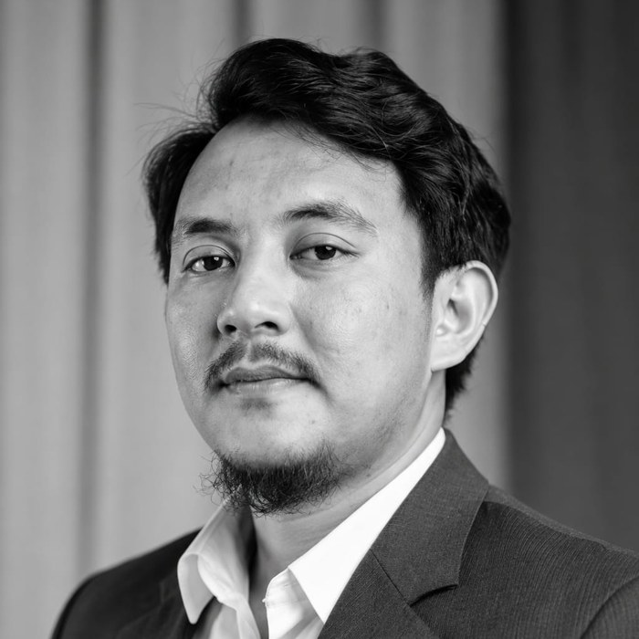
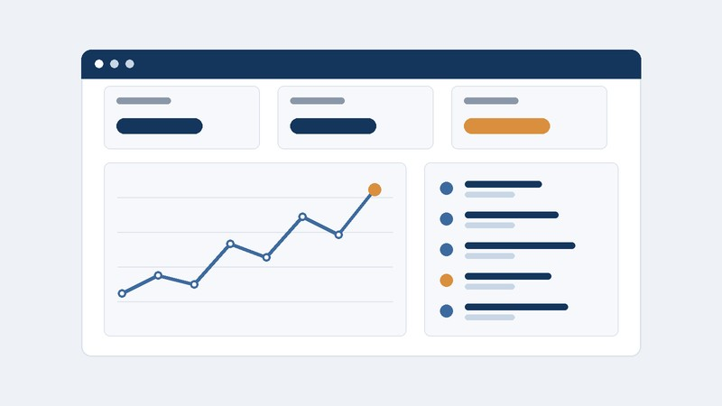
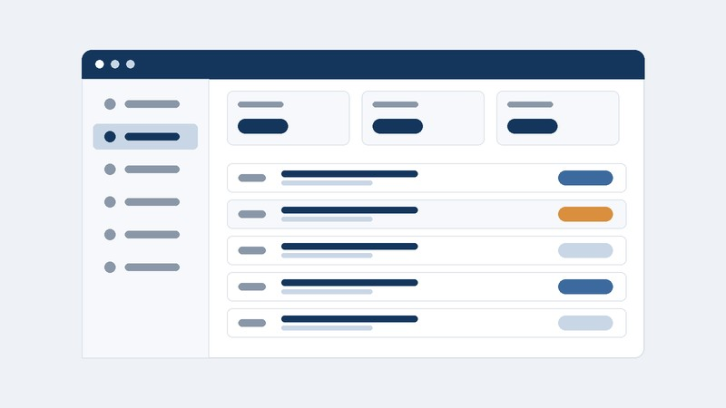
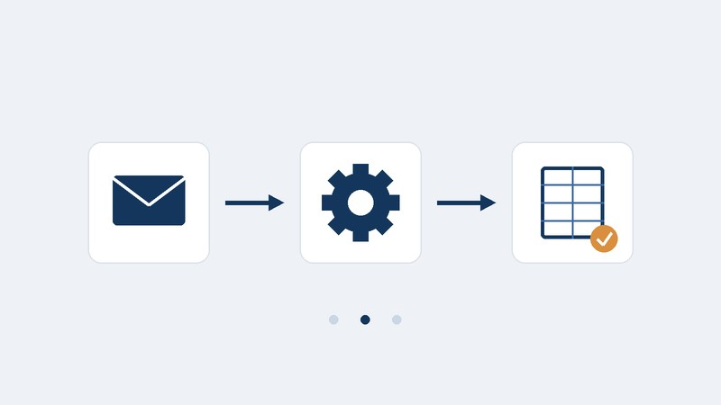

Hai, saya
Muhammad Fahmi Mauludin
IT Manager | Cloud & Infrastructure
Saya membantu bisnis membangun sistem TI yang andal, aman, dan scalable, mulai dari infrastruktur, cloud, operasional.

What I Do
Cloud & Infrastructure
Merancang, men-deploy, dan mengelola cloud serta sistem on-premise.
IT Operations & Security
Memastikan sistem aman, stabil, dan patuh standar.
Data & Automation
Mengubah data menjadi insight dan mengotomasi proses.
Featured Projects

Infrastructure Monitoring
Zabbix · Grafana · Docker

Internal Tools
Node.js · MySQL · Docker

Automation Scripts
Python · Google API
Index Halaman
Turning Technology into Real Solutions
Profesional TI dengan pengalaman lebih dari 12 tahun di cloud, infrastruktur, lintas industri asuransi, kesehatan, dan data. Bersemangat membangun sistem yang andal dan terus belajar.
Education
Universitas Dian Nusantara
Bachelor's Degree in Computer Science (S1) · 2024 – sekarang · Semester 3
Core Skills
Certifications
ISO 27001:2013
Awareness
ISO 27001:2022
Implementation
ITIL 4
Managing Professional
COBIT 2019
Foundation
Selected Works
Kumpulan project dan solusi yang pernah saya kerjakan, dari infrastruktur.
Karya Web untuk Klien
Website, microsite event, mobile apps, dan platform digital yang saya kerjakan dari nol sampai live, untuk klien dari sektor energi, telekomunikasi, perbankan, pendidikan, pariwisata, dan lainnya.
My Professional Journey
Ringkasan pengalaman kerja dan tanggung jawab utama.
PT Lippo Life Assurance · IT Manager
- Memimpin operasional dan manajemen infrastruktur IT untuk mendukung layanan asuransi nasional.
- Mengoordinasikan audit dan implementasi ISO 27001:2013 & 2022.
- Menurunkan waktu penyelesaian insiden hingga 40% melalui monitoring proaktif.
PT Diagnos Laboratorium Utama Tbk · Supervisor IT Infrastructure
- Mengelola infrastruktur dan operasional sistem IT.
- Mendukung business continuity dan inisiatif keamanan.
- Menangani jaringan, server, dan dukungan pengguna di berbagai cabang.
PT Indonesia Indicator · Operation Service Area & IT Infrastructure
- Mengelola infrastruktur IT dan operasional layanan.
- Memberikan dukungan teknis dan pemeliharaan sistem.
- Mendukung manajemen data dan operasional harian.
Sharing Knowledge & Experience
Pemikiran, tutorial, dan insight tentang teknologi dan infrastruktur.
Let's Connect
Silakan hubungi saya untuk kolaborasi, peluang kerja, atau sekadar menyapa.
fahmymohamdz@gmail.com
https://www.linkedin.com/in/fahmy-mohamad
Lokasi
Bekasi, Indonesia